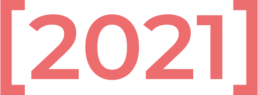
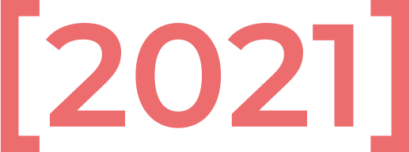

3rd IEEE Conference on Games
17–19 AUG IT University of Copenhagen
Games offer a fantastic domain for computational creativity, design, technology, education, social sciences and, undoubtedly, artificial and computational intelligence. The annual IEEE Conference on Games (IEEE CoG) seeks to share insights and cutting-edge research related to game technologies and design, covering scientific, technical, and human aspects of games.
The Conference on Games (CoG) evolves from the traditional Computational Intelligence and Games (CIG) to bring together leading researchers and practitioners from academia and industry in the field of Games, to discuss recent advances and explore future directions.
IEEE CoG 2021 will include presentations of peer-reviewed papers, invited talks by high-profile industry and academic leaders, panels, posters and demos. Furthermore, this year's edition will include two new forms of presentations:
- Presentations of abstract submissions, this submission will not be included in the proceedings of the conference;
- Presentations of articles previously published in the IEEE Transactions on Games journal.
We welcome papers and presentations related to all aspects of Games, including, but not limited to, the following broad subject areas:
Important Dates
Jan 15
Tutorial/special session/competition proposal deadline
Apr 9
Full paper submission deadline
May 17
Notification of acceptance
May 28
Abstracts and auxiliary tracks paper submission deadline
Jun 18
Camera ready copy deadline
Jun 18
Early bird and author registration deadline
Aug 17
Conference starts!
Calls
Call for Tutorials
We invite submissions for tutorials to be held at IEEE CoG 2021. This is an opportunity for you to share your expertise and influence future research directions in the CoG community. Tutorials can be on any topic in the scope of the conference; we especially encourage tutorials that reflect and respond to this broad scope.
Typically, tutorials are expected to run for 1.5 hours, but longer ones will also be considered. The format may be negotiated through the Tutorial Chairs.
Proposals should include the following information:
- Title;
- Duration and logistical requirements;
- Outline of topic coverage and format of tutorial (less than 400 words in total);
- List of presenters with contact details and short biographical details (less than 150 words for each presenter);
- Links to the presenter/organizer web page or the tutorial page (optional).
Proposals should be sent by email to the Tutorial Chairs by January 14th 2021 or sooner. Notification of acceptance will take place by February 12th.
Email proposals and enquiries to both Tutorial Chairs: Jesper Juul (j@jesperjuul.net) and Sebastian Risi (sebr@itu.dk).
Call for Competitions
The CoG 2021 Organising Committee invites proposals for competitions to be held at the conference. These may be completely new ones or competitions held already in the last years, possibly at other venues. Proposals are due by January 14th 2021, and will be reviewed based on their relevance to the CoG community. Please see the topics covered by the CoG conference. Competitions can be based on well-known games as well, but competitions based on custom-made and lesser-known games are also welcome. The competition needs to define a set of rules and objectives for determining the score of each player.
To submit your proposal, send an email with the title "CoG 2021 Competition Proposal" to the competition chairs Ruck Thawonmas (ruck@is.ritsumei.ac.jp) and Antonios Liapis (antonios.liapis@um.edu.mt).
Please, include the following information with your proposal:
- Organisers’ names;
- Competition title;
- Web address;
- Description of the competition (about 200 words);
- Whether the competition will have several tracks or not, and if they should be considered different competitions or a single one.
Additionally, the following item can be submitted with the proposal or later:
- Video of the competition/tracks (see below).
Please, also note the following:
- The IEEE CIS Student Game-Based Competition Sub-Committee (SGBC) has determined, in agreement with the Games TC meeting held at CIG 2017, that all competitions (including all tracks) must provide a short video for entrants. Competitions that do not provide this video will not be accepted at CoG 2021. However, submission of the video is not necessary for the proposal but can be deferred to after provisional acceptance of the competition. This requirement applies to both new and old competitions. The objective of creating these videos is to raise the general quality of our competitions and attract as many participants as possible by providing an easier start with the respective frameworks. The duration of the video is to be decided by the organizers, but it should have (English) subtitles to aid non-native English speakers. The content should demo concepts like how to install the required software packages, write an entry for the competition and submission instructions. The rationale is that if the whole process can be shown in less than 5 minutes, participants will feel more encouraged to participate and prepare a submission for the contest;
- We will of course provide certificates for all competitions and we will try to make some price money available, but we also encourage the organizers to look for financial sponsorship to make their competition more attractive;
- Competition papers. These are regular papers (up to 8 pages) that describe one or more entries to the competitions that are running at this year’s CIG. Competition papers need to include evaluation of the contribution, including (if possible) results on the same benchmark as that used by the competition, and comparison to other competition entries. Because the problem domain is well-known, these papers can be reviewed faster than regular papers. The same quality standards will apply to competition papers as to regular papers. Competition papers should be submitted by 28th May 2021. The competitions do not need to be accompanied by competition papers; a competition can run even in the absence of any submitted papers.
The IEEE CIS Competitions Subcommittee is actively funding competition prizes of competitions accepted at IEEE CIS conferences. Information about the funding application process is available here
Call for Special Session Proposals
A special session addresses one or more topic areas within games research and is intended to bring together researchers working on those topics to provide an excellent session at the IEEE Conference on Games. Please read the call for papers for CoG 2021 and its list of topics before submitting your special session proposal.
A special session proposal should not be more than two pages, not including the brief biographies of the proposers and the draft call for papers.
Please include the following information with your proposal:
- Title: the title of the proposal;
- Description: a description of the topic of the session and its place in games research;
- Example topics: a bullet list of topics that the session might cover;
- Justification: a brief explanation making the case that the special session belongs in the conference. An estimate of the number of submissions should be included;
- Sponsors: a list of researchers proposing the session. At least one must be an IEEE member and all sponsors are expected to serve as reviewers for the papers in the special session. If your session is accepted, you must also provide a list of reviewers sufficient to your expected submissions;
- Sponsor Biographies: each sponsor should include a brief biography that demonstrates professional excellence and qualification to review for the special session. The bio should include a current e-mail address;
- Draft Call for Papers: on its own page, a draft call for papers to be used in advertising the special session. The draft call for papers should not fill more than one page.
Call for Papers and Presentations
Full papers. Deadline on April 9th 2021
Full papers have an 8 page limit (including references and appendices), and should constitute a technical or empirical contribution to scientific, technical, and human aspects of games.
Full papers will be published by IEEE in the proceedings of the conference.
Short, competition, vision and demo papers. Deadline on May 28th 2021
Short papers (2-4 pages) describe work in progress, smaller projects that are not yet ready to be published as a full paper, or new progress on projects that have been reported elsewhere.
Competition papers (8 pages) describe research related to one of the competitions in the Games community, including the design of new competitions and in particular submissions to existing competitions.
Vision papers (8 pages) describe a vision for the future of the Games field or some part of it, are based on extensive research and include a comprehensive bibliography. Standards for competition papers are as high as for other CoG papers, and standards for vision papers are higher.
Demo papers (2 pages) describe work in progress and will be presented during a demo session.
Short, competition, vision and demo papers, similarly to full papers, will be published by IEEE in the proceedings of the conference.
Extended Abstracts. Deadline on May 28th 2021
This edition of IEEE CoG welcomes extended abstract submissions by researchers and practitioners to present their research findings. The extended abstract submission is intended to accommodate researchers who want to participate and share their findings at CoG but come from disciplines that traditionally do not publish their work in conference proceedings.
Extended abstracts should be between 750 and 1500 words including references. Works submitted in this format will not be published in the conference proceedings.
Journal Paper Presentations. Deadline on May 28th 2021
From this year, the IEEE CoG conference will welcome proposals for presentation of articles previously published in the IEEE Transactions on Games journal. For anyone interested in presenting their published work, you will need to submit a copy of the published paper in the appropriate track.
Industry talks. Deadline on May 28th 2021
We welcome talk proposals from the games industry that wish to present their work on the areas covered in this conference. We are interested in presentations about research prototypes, commercial products, indie/mobile/AAA games, AR/VR applications, etc., as well as participation on poster sessions and discussion panels. From these talk proposals do not require the submission of a written manuscript to be accepted at the conference.
All page/word limits for all submission types include references and appendices. We plan to invite the principle authors to submit an extended version of their papers to the IEEE Transactions on Games (ToG). More details on this matter will be given later. All deadline times are anywhere on earth.
Organising committee
General chairs
Paolo Burelli, IT University Of Copenhagen
Miguel Sicart, IT University Of Copenhagen
Program chairs
Rilla Khaled, Concordia University
Fotis Liarokapis, Masaryk University
Julian Togelius, New York University
Local chairs
Djodrje Grbic, IT University Of Copenhagen
Hanna Wirman, IT University Of Copenhagen
Tutorial chairs
Jesper Juul, The Royal Danish Academy of Fine Arts
Sebastian Risi, IT University Of Copenhagen
Keynote chairs
Mike Cook, Queen Mary University Of London
Georgios Yannakakis, University of Malta
Competition chairs
Ruck Thawonmas, Ritsumeikan University
Antonios Liapis, University Of Malta
Special session chairs
Simon Lucas, Queen Mary University Of London
Yun-Gyung Cheong, Sungkyunkwan University
Financial chair
Daniel Ashlock, University of Guelph
Proceedings chair
Mike Preuss, Leiden University
Industry chairs
Martin Pichlmair, IT University Of Copenhagen
Na'Tosha Bard, KMD
Publicity chairs
Mads Johansen, IT University Of Copenhagen
Miruna Vozaru, IT University Of Copenhagen
For more information, you can check us on Twitter @ieee_cog or contact Paolo Burelli and Miguel Sicart